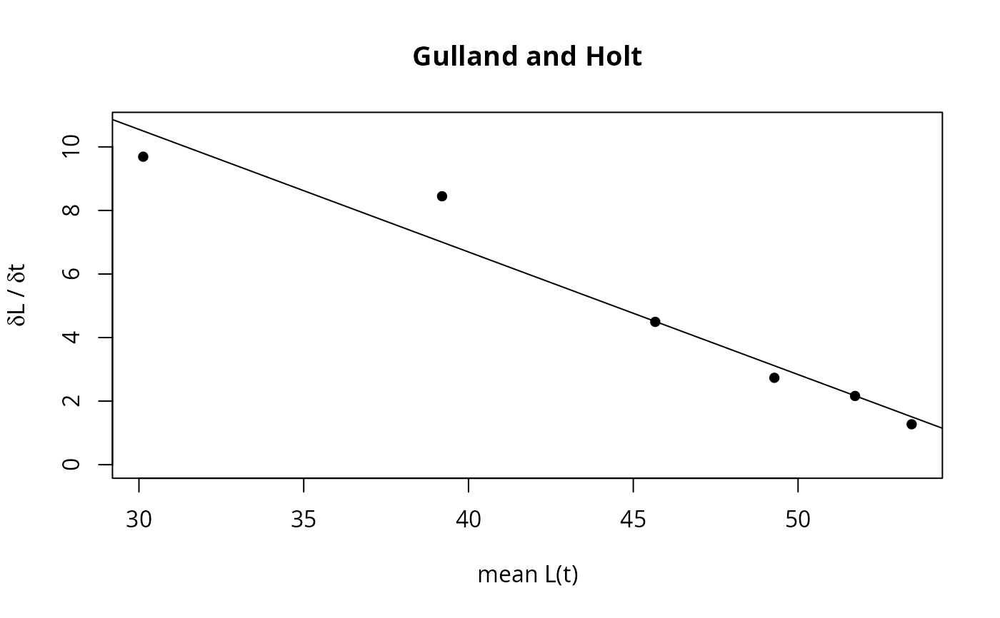
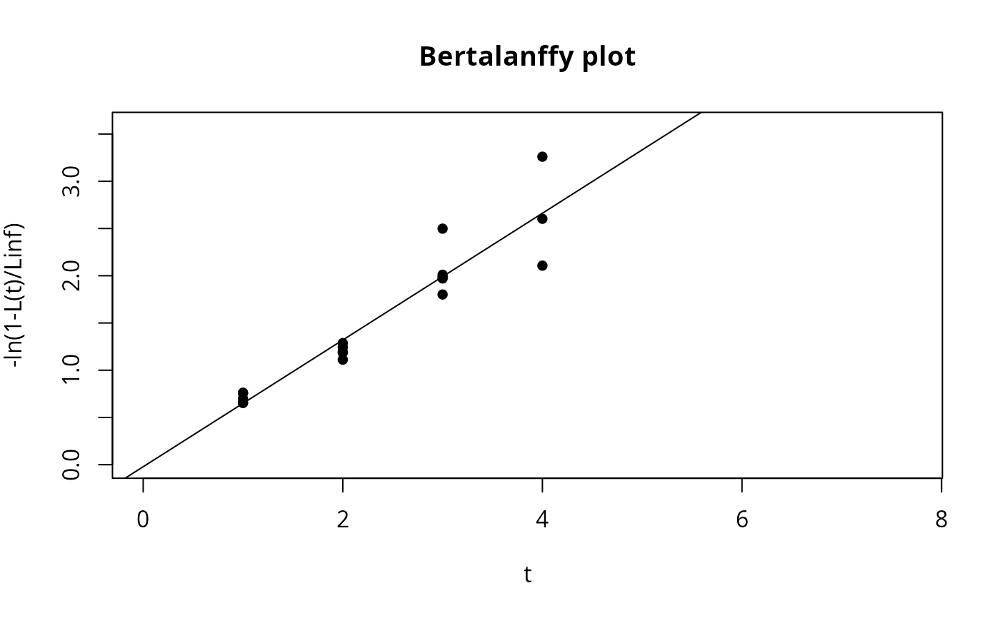
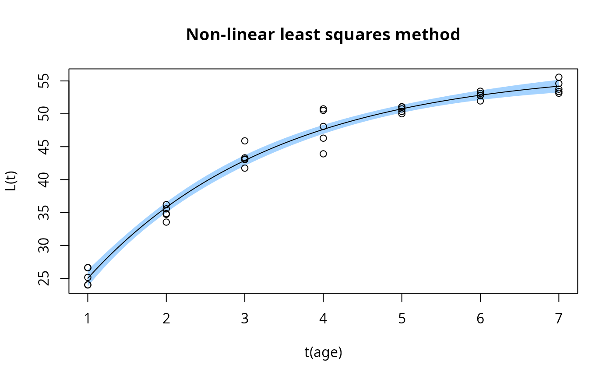

Estimation of growth parameter using length-at-age data
Source:R/growth_length_age.R
growth_length_age.RdThis function estimates growth parameters from length-at-age data. It allows to perform different methods: Gulland and Holt, Ford Walford plot, Chapman's method, Bertalanffy plot, or non linear least squares method (LSM).
Usage
growth_length_age(
param,
method,
Linf_est = NA,
Linf_init = 10,
K_init = 0.1,
t0_init = 0,
CI = FALSE,
ci.level = 0.95,
age_plot = NULL,
do.sim = FALSE
)Arguments
- param
a list consisting of following parameters:
age: age measurements,
length: corresponding lengths in cm.
- method
indicating which of following methods should be applied:
"GullandHolt","FordWalford","Chapman","BertalanffyPlot", or"LSM"- Linf_est
BertalanffyPlot requires an estimate for Linf to derive K and t0 (for more information see Details).
- Linf_init
initital parameter of Linf for non-linear sqaures fitting (default 10)
- K_init
initital parameter of K for non-linear sqaures fitting (default 0.1)
- t0_init
initital parameter of t0 for non-linear sqaures fitting (default 0)
- CI
logical; Should confidence intervals be calculated? This option only works for the LSM method. Default is FALSE.
- ci.level
required confidence level of the parameters and of the confidence band of the growth curve (for LSM method only)
- age_plot
sequence with ages used for plotting (LSM method only). By default age_plot = seq(min(param$age),max(param$age),0.1)
- do.sim
Deprecated; has no effect.
Value
A list with the input parameters and following parameters:
x: independent variable used for regression analysis,
y: dependent variable used for regression analysis,
mod: (non) linear model,
Linf: infinite length for investigated species in cm [cm],
K: growth coefficent for investigated species per year [1/year],
t0: theoretical time zero, at which individuals of this species hatch (only for Bertalanffy plot and LSM method).
estimates: dataframe with growth parameters and confidence intervals (only if LSM method was applied with
CI = TRUE),predCI: dataframe with the ages (
age_plot), the fitted lengths (fit) and the lower and upper limits of the confidence band of the growth curve (only if LSM method was applied withCI = TRUE).
Details
Gulland and Holt plot assumes
infinitestimal delta t (only reasonable approximation of growth parameters if delta t
is small). Ford Walford plot and Chapman assume constant time intervals between ages
(delta t). The Bertalanffy plot is a robust method, however it requires an estimate of Linf. As
long as this estimate is reasonable the resulting estimate of K is reasonable. For
a first estimate of Linf the Powell Wetherall method powell_wetherall can
be used. Otherwise, the largest fish or the average of the ten largest fish can be
used for a small or large sample, respectively. All lengths have to be smaller than
Linf as otherwise the logarithm is not defined. Oldest fish (if larger than Linf) have
to be omitted. Non-linear least squares fitting is the preferred method to estimate
growth parameters according to Sparre and Venema (1998). If CI = TRUE the
confidence intervals of the parameters (profile likelihood, confint)
and the confidence band of the growth curve are calculated, and the band is
plotted. The band is calculated with the delta method: the standard error of
the predicted length follows from the gradient of the VBGF with respect to
Linf, K and t0 and the covariance matrix of the parameters, and the band
uses the quantile of the t distribution with the residual degrees of freedom.
References
Sparre, P., Venema, S.C., 1998. Introduction to tropical fish stock assessment. Part 1. Manual. FAO Fisheries Technical Paper, (306.1, Rev. 2). 407 p.
Examples
# synthetical length at age data
dat <- list(age = rep(1:7,each = 5),
length = c(rnorm(5,25.7,0.9),rnorm(5,36,1.2),rnorm(5,42.9,1.5),rnorm(5,47.5,2),
rnorm(5,50.7,0.4),rnorm(5,52.8,0.5),rnorm(5,54.2,0.7)))
growth_length_age(dat, method = "GullandHolt")

#> $age
#> [1] 1 1 1 1 1 2 2 2 2 2 3 3 3 3 3 4 4 4 4 4 5 5 5 5 5 6 6 6 6 6 7 7 7 7 7
#>
#> $length
#> [1] 26.60562 24.03066 26.64588 25.14343 23.99245 34.83728 36.20137 35.55818
#> [9] 34.72822 33.54642 43.30615 43.12160 43.03680 41.74681 45.88979 50.74957
#> [17] 46.29681 48.08083 50.52222 43.92014 50.00969 50.36090 51.04348 50.74813
#> [25] 51.07743 53.43040 53.09346 52.76938 51.95666 52.80406 53.12475 54.60642
#> [33] 53.37992 53.74343 55.56016
#>
#> $delta_t
#> [1] 1 1 1 1 1 1
#>
#> $x
#> [1] 30.12895 39.19726 45.66707 49.28092 51.72936 53.44686
#>
#> $y
#> [1] 9.690687 8.445935 4.493686 2.734011 2.162866 1.272143
#>
#> $r2
#> [1] 0.9518214
#>
#> $mod
#>
#> Call:
#> lm(formula = y ~ x)
#>
#> Coefficients:
#> (Intercept) x
#> 22.1199 -0.3857
#>
#>
#> $Linf
#> [1] 57.35385
#>
#> $K
#> [1] 0.3856743
#>
# Bertalaffy plot
growth_length_age(dat, method = "BertalanffyPlot", Linf_est = 50)
#> Warning: NaNs produced

#> Some lengths were larger as the Linf value which was
#> provided. These lengths are omitted.
#> $age
#> [1] 1 1 1 1 1 2 2 2 2 2 3 3 3 3 3 4 4 4 4 4 5 5 5 5 5 6 6 6 6 6 7 7 7 7 7
#>
#> $length
#> [1] 26.60562 24.03066 26.64588 25.14343 23.99245 34.83728 36.20137 35.55818
#> [9] 34.72822 33.54642 43.30615 43.12160 43.03680 41.74681 45.88979 50.74957
#> [17] 46.29681 48.08083 50.52222 43.92014 50.00969 50.36090 51.04348 50.74813
#> [25] 51.07743 53.43040 53.09346 52.76938 51.95666 52.80406 53.12475 54.60642
#> [33] 53.37992 53.74343 55.56016
#>
#> $x
#> [1] 1 1 1 1 1 2 2 2 2 2 3 3 3 3 3 4 4 4 4 4 5 5 5 5 5 6 6 6 6 6 7 7 7 7 7
#>
#> $y
#> [1] 0.7595272 0.6551063 0.7612495 0.6989009 0.6536362 1.1931833 1.2874539
#> [8] 1.2418948 1.1860162 1.1114801 2.0108343 1.9836372 1.9713842 1.8014226
#> [15] 2.4985478 NaN 2.6028282 3.2601294 NaN 2.1070416 NaN
#> [22] NaN NaN NaN NaN NaN NaN NaN
#> [29] NaN NaN NaN NaN NaN NaN NaN
#>
#> $r2
#> [1] 0.8932362
#>
#> $mod
#>
#> Call:
#> lm(formula = y ~ x)
#>
#> Coefficients:
#> (Intercept) x
#> -0.02163 0.67080
#>
#>
#> $Linf
#> [1] 50
#>
#> $K
#> [1] 0.670799
#>
#> $t0
#> [1] 0.03224049
#>
# non linear least squares method
# \donttest{
output <- growth_length_age(param = dat, method = "LSM",
Linf_init = 30, CI = TRUE, age_plot=NULL)

summary(output$mod)
#>
#> Formula: Lt ~ (Linf * (1 - exp(-K * (t - t0))))
#>
#> Parameters:
#> Estimate Std. Error t value Pr(>|t|)
#> Linf 56.88807 1.01296 56.160 < 2e-16 ***
#> K 0.41213 0.03457 11.921 2.61e-13 ***
#> t0 -0.40602 0.11945 -3.399 0.00183 **
#> ---
#> Signif. codes: 0 ‘***’ 0.001 ‘**’ 0.01 ‘*’ 0.05 ‘.’ 0.1 ‘ ’ 1
#>
#> Residual standard error: 1.424 on 32 degrees of freedom
#>
#> Number of iterations to convergence: 7
#> Achieved convergence tolerance: 7.9e-07
#>
# }